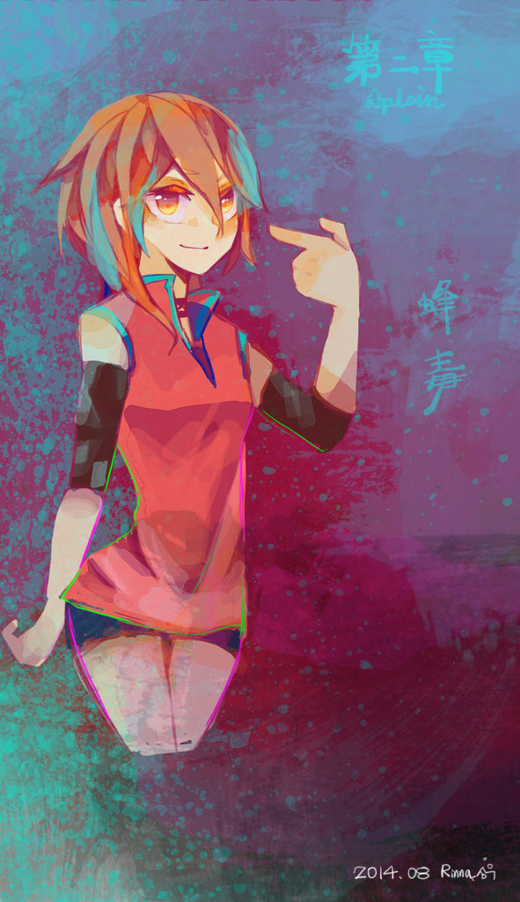

第二幕 ・ 蜂毒
01

又是個下雨的永夜。
她拉起帽兜，將衣領豎起，頸間的碎銀相互撞擊發出輕不可聞的聲響。
『叮。』細碎聲響作為頓點，她於巷間駐足。
這裡就是五番街……她半瞇起蜜色雙眸。
看了眼手中紙條上清秀的字跡，輕巧地拐了個彎在某個攤販前停了下來。
「來自無名者的包裹，請查收。」帽沿底下蜜色眸子盈滿笑意，她將包著紙袋、沉甸甸的物品遞向前。
「鬼靈精怪的樣子。小丫頭、不會又把我的貨物掉包了吧？」對方在陰暗處，只有粗曠的聲音與她會面。
她笑了，「不值錢的東西我可不會遞送的。」
語落之時又惹得對方嗤了一聲，不是不屑、倒有點像早已摸透對方性格的了然。
「諾，酬賞。」粗曠的聲音應了聲，拋出一包東西至楚歌手中，「記得替我向玖氏長女道好。」
「額外服務是要付費的呦。」穩穩地接住回禮，楚歌將它試拋了一下，踮了踮重量，揚起嘴角，「是很好的銀製拆信刀呢，還真捨得。」
「只懂耍嘴皮。」對方拋下這句話，腳步聲漸行漸遠，似乎是走近巷子的深處了。
「謝謝光臨。」她並不是太誠心，只是帶著笑容如習慣般向對方消失的方向說著。
——慘叫聲。
銳利地彷若劃破人群，伴隨慌亂的腳步、以及黑色與紅色。
楚歌穩住了腳步，並沒有跟著人群跑，她深吸了口氣，凝神，蜜色雙瞳警戒地掃視四周。
雨滴沿著帽沿滴落，濛濛的雨珠暈染了視線，踩踏水漥的聲響干擾了楚歌的判斷力。
「嗨嗨——不快點逃走的話、會被吃掉的喲？」
在她尋找出騷動源頭時，一道不大不小的嗓音自破舊的遮雨棚傳來。
楚歌正想抬頭，來人卻早一步自上方跳了下來，雙手插著口袋笑瞇瞇地望著她。
「打招呼？還真有閒情逸致。」見是不熟的面孔，楚歌並沒有分太多心搭理對方，只是賞了對方一個輕笑。
「別這麼說嘛——真是位健忘的小姐呢。」語音落下，他倆同時向後跳開，風壓夾雜著雨水，黑色的利刃深入地面。
「是嗎？我一向認為自己的記憶力很不錯呢。」楚歌落地後抽出月牙刀刃，上扣銀鍊，壓低重心，「先生可不要太大意囉……腳邊，嗯？」
語音落下同時，手中的銀鍊甩出漂亮的圓弧。
在楚歌攻擊之前對方向後跳了幾步遠，銀刃所及之處——險些連自己的腳一起——黑色黏稠生物身子皆分了家。
「好心卻又惡毒呢。」對方笑瞇了棕色眸子，仍是雙手插著口袋，輕巧地躲過各個攻擊。
「我可是個好心人喔，先生不介意的話，就叫我楚歌小姐吧。」楚歌略帶惡趣味地在自己的名字後加了敬稱。
一邊攻擊，邊觀察這個人是否真的與自己見過面。
但沒有太多時間讓她思考，受了攻擊的夢喰如黏稠的泉水般自地面湧出，它如同炸了毛一般身子綻出黑色利刃，朝兩人四面八方攻擊而去。
「嘖。」利刃擦過了楚歌的左臂和右腳踝，她的傷口綻出了鮮血，令她發出了不滿的單音節。
「小姐受傷了呢，雖然狀況好像還不錯呢。」對方倒躲的游刃有餘，還頗輕鬆地關心了楚歌幾句，這令楚歌心情頓時惡劣了起來。
聞言她不滿地賞了對方一個殺氣騰騰的眼神，「是嗎？身為紳士的話……」
她握緊刀刃三步併兩步地向夢食欺近，「——你也不要光只是看好戲啊。」
嗖！
銀刃自左側向右上劃出直線，俐落的猶如能夠劃破空氣。
「哇啊。」對方吹了聲口哨，「不過我並不是什麼紳士喔，小姐不介意的話可以叫我柴郡（The Cat）呦。」
聽見名字的瞬間，楚歌的表情夾雜了一絲嫌棄，「我討厭貓。」
「真不可愛。」對方無趣地變成了包子臉，不過又迅速變回正常。
「不過、小姐應該是那裡來的人吧？」這麼說著，笑瞇瞇地糾纏，「異常討人厭、有趣，卻又健忘的那種人們吧～」
「去死。」楚歌側身閃過攻擊，直擊約莫是核心的位置，絲毫不留情，讓人不太明白究竟是在對誰說話。
夢喰好似因痛苦而型態扭曲，周遭的空間彷若被它影響而強烈震盪，它倏地縮小，緊接著——無止盡地炸大！
「——！」她被強大的衝擊力擊退，即使壓低身子穩住重心，依舊滑行了好幾步遠甚至差點翻滾開來。
她咬牙穩住重心，再次握緊手中的刀刃，束緊銀鍊向外一甩。銀光閃過，月牙般的軌道不偏不倚斬破了裸露出的夢喰核心，猶如紅寶石之物、碎裂。
夢喰好似無聲地尖叫，殘影強烈地晃動，如同破碎鏡面般碎散，緊接著消失在空氣中，肅殺的氣氛頓時減輕了許多。
楚歌半瞇著眼甩了甩頭，定眼一看，幾家攤販被破壞得亂七八糟，路面也坑坑洞洞的。
「喂喂，壞掉是要賠的啊。」她不滿地嘟噥著，看向被破壞的商店，那可是她很喜歡的麵包店啊，真惱人。
「所以在被當成替死鬼之前，快點偷偷逃走吧？」
忽然湊到自己身邊的人這樣說著。
還沒從戰鬥後的戒備中解除，楚歌反射地就是朝來人臉上招呼一個掃腿。
「嗚哇，好險。」敏捷地一個側身，柴郡咖啡色的頭髮隨著攻擊的風壓飛揚。
「我就直接說了，從我這裡得不到好處的，不要白費工夫了。」楚歌向後退開，不明白對方意圖、也不知道對方想從自己這裡得到什麼。
「就說小姐很健忘的，可真令人傷心。」柴郡微微的傾身，眼神卻人直直地望向對方，「那麼、楚歌小姐，再次向妳鄭重地介紹。」
溫文儒雅且風度十足，柴郡眨了眨棕色眼眸，「無名商店的忠實顧客——柴郡先生。」
輕笑，他學著楚歌的自稱用法如法炮製。
「聽聞不少楚歌小姐的事，希望未來還能夠好好相處呢。」
楚歌半瞇起眼，向後輕巧地跳了兩步重新拉上帽兜，雙眸也毫不閃避地直直回望對方，「客套話就不必了，若想和無名商店關係友好，下次就以客人的身分老老實實的見面吧。」
楚歌支手叉腰態度傲慢。這樣突然地見面糾纏不清，多半是為了情報或者利益吧。毫不擔心得罪人或者失去潛在客戶，有需要的自然會找上門，她從來不擔心。
「客人是嗎？」柴郡勾起嘴角，「會的會的。」
他朝對方離開的反方向邁步，消失在雨中的黑夜裡。
他自然不擔心，有所求的人自然會蒞臨的，可不是嗎？